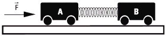
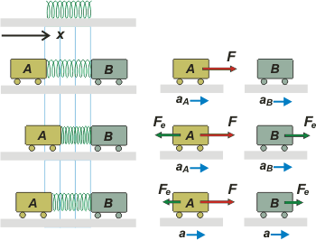

|
NO ME SALEN
PROBLEMAS RESUELTOS DE FÍSICA DEL CBC
|
|

|
5.01- Los carritos A (de 4 kg) y B (de 3 kg) de la
figura, permanecen en reposo sobre un riel horizontal,
por el cual pueden moverse con rozamiento
despreciable.
|
| |
|  |
|
Ambos están vinculados por un resorte de masa
despreciable cuya constante elástica es 300 N/m,
y su longitud en esas condiciones es 0,3 m.
En un instante dado, se aplica una fuerza F horizontal
de 50 N sobre el carrito A.
a- Hallar la aceleración inicial de cada carrito.
b- Hallar la aceleración de cada carrito, cuando
la longitud del resorte es 0,2 m.
No te voy a decir que es una aplicación simple y directa de la Ley de Hooke; ni tampoco que es lo más sencillo que vas a econtrar en ejercicios de fuerzas elásticas. pero tampoco es para que dramatices la situación ni quieras pasarte a ciencias sociales, o al profesorado de educación física...
Te voy a ayudar con un esquemita que representa tres situaciones diferentes (las dos primeras son las que menciona el enunciado del ejercicio) y al lado de cada esquemita tenés los diagramas de cuerpo libre correspondientes a esa situación. |
|
|
|  |
Acá, en la parte superior, agregué una representación del resorte tal cual lo compré en la ferretería. Eso te va a ayudar a entender que mientras tenga esa misma longitud (que tenía en el cajoncito donde el ferretero lo guardaba) no hace fuerzas en sus extremos.
En el rengón de abajo, la situación a). En ese instante inicial, la compresión del resorte es nula. Eso no va a durar mucho, ya lo sé. pero la pregunta del enunciado alude a ese instante. |
|
|
|
Sobre el cuerpo A obra una sola fuerza, que es la de 50 N. Y sobre el B, ninguna. Tenés que tener presente dos cuestiones que funcionan diferente cuando trabajamos con sistemas vinculados por cuerdas que sistemas vinculados por elásticos: las aceleraciones de los cuerpos no tienen por qué ser iguales. De modo que habremos de identificarlas con subíndices.
Carro A → Σ F = mA . aA → F = mA . aA
Carro B → Σ F = mB . aB → 0 = mB . aB
No consigné las fuerzas verticales (vos entenderás). Hacé los despejes. |
|
|
| |
aA = 12,5 m/s² aB = 0 m/s² |
a) |
|
|
|
Yo sé que no es fácil imaginar esos estados que existen sólo un instante. Hacé el esfuerzo. Vamos a la segunda situación. Ahora encontrás a los carritos con el resorte en el medio, pero comprimido a 0,2 metros... o sea: comprimido 0,1 metro. (Qué importante que resulta la preposición a, loco). Si no lo cazaste fijate que en el esquemita puse unas líneas verticales de fondo para ayudarte a pensar la cuestión.
Carro A → Σ F = mA . aA → F — Fe = mA . aA
Carro B → Σ F = mB . aB → Fe = mB . aB
Donde la fuerza elástica vale
Fe = k Δx = 300 N/m . 0,1 m = 30 N
Hacé las cuentas... |
|
|
| |
aA = 5 m/s² aB = 10 m/s² |
b) |
|
|
|
Yo te voy a agregar una pregunta (que es la que representé abajo de todo en el esquema. ¿Cuánto debe valer la compresión del resorte para que ambos carritos tengan la misma aceleración? Entonces...
Carro A → Σ F = mA . aAB → F — Fe = mA . aAB
Carro B → Σ F = mB . aAB → Fe = mB . aAB
De ahí surge que aAB debe valer 7,14 m/s² y la fuerza que hace el elástico 21,43 N. Luego, la compresión debe valer...
Δx = Fe / k = 21,43 N / 300 N/m = 0,07 m
|
|
|
| Comentario: Tampoco es fácil imaginar una situación dinámica en la que las cosas descriptas en este ejercicio ocurran. Pero son posibles, creelo; y sencillas. Si aplicás una fuerza a un sistema como éste que inicialmente se halla en reposo, los cuerpos se van a acelerar con aceleraciones variables. El resorte acelerará con ellos y su longitud variará en forma oscilante. Ese es el motivo por el cual el carrito B tiene en un momento una aceleración mayor que el A. Si el sistema es real (amortiguado), y se alcanza esa situación en la que el resorte deja de oscilar... ha de estabilizarse en la longitud 0,23 m. |
|
|
| |
|
 |
| DESAFIO: Replantear integralmente este ejercicio, pero suponiendo ahora que la fuerza externa se aplica sobre el carrito A en la dirección contraria y que el resorte se estira 0,1 m. |
|
| Algunos derechos reservados.
Se permite su reproducción citando la fuente. Leer con moderación. Prohibida su venta a menores de 18 años. Última actualización may-08. Buenos Aires, Argentina. |
|
|
|